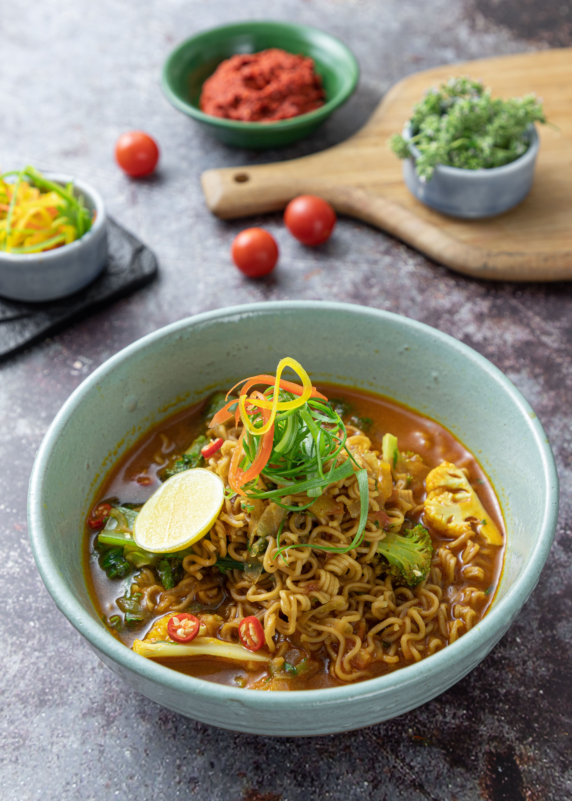

Maggi Kari

About dish
Maggi Kari is a quick instant noodle dish popular in Malaysia, known for its spicy curry flavour and fast preparation. It’s commonly eaten as a comfort food when you need something cheap, fast, and filling.
Ingredients
- 1 packet Maggi kari noodles
- 1/2 bowl of water
- 2 Eggs
- Chili padi
- Sausage (optional)
Steps
- Boil water in a pot.
- Add noodles into boiling water.
- Cook for 2-3 minutes until soft.
- Add curry seasoning powder.
- Stir well until mixed.
- Add eggs.
- Pour into bowl.
Back to other great recipes